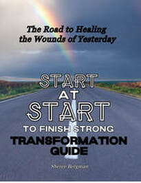

After finishing her book, she strongly encourages you to delve into the Start at Start Transformation Guide. This companion guide offers a structured and introspective journey, allowing you to thoroughly examine your own life experiences and the symptoms that may have emerged due to unmet foundational needs during your formative years. Within this book’s pages, you will be guided to explore and assess how the absence or inconsistency of essential emotional support from one or both parents has shaped your current mental and emotional well-being.
The Guide was created to help you identify these pivotal moments from your childhood and reflect deeply on how these experiences have influenced your adult life. You will be led through a series of exercises designed to uncover the roots of any lingering emotional pain, behavioral patterns, or relational challenges that stem from those early unmet needs. This process is both enlightening and healing, allowing you to confront and address the underlying issues that may have affected your life for years, possibly without your full awareness.
By engaging with the Transformation Guide, you will have the opportunity to gain valuable insights into your emotional history, uncovering the connections between your past and present self. This reflective journey is an essential step toward understanding how your early environment has contributed to your current challenges, and more importantly, it provides you with the tools to begin healing those old wounds. As you work through the exercises, you will develop a deeper understanding of your emotional landscape, empowering you to make meaningful changes in your life and fostering a renewed sense of self-compassion and resilience. This guide is not just a supplementary resource but a vital tool that can help transform how you view yourself and your past, paving the way for a more fulfilling and emotionally balanced future. Whether you are just beginning your journey of self-discovery or are already well along the path, the Start at Start Transformation Guide offers invaluable guidance and support as you seek to heal and grow.
By engaging with the Transformation Guide, you will be able to:
- Identify Personal Symptoms: Reflect on the personal symptoms or patterns you experience that might indicate unmet needs. These could include difficulties in self-esteem, challenges in forming healthy relationships, persistent feelings of insecurity, or emotional instability.
- Understand Emotional Impact: Gain insight into how specific unmet needs during childhood, such as lack of affection or recognition, may have contributed to your current emotional state. This understanding will help you connect past experiences with present behaviors and feelings.
- Assess Behavioral Patterns: Examine how unresolved childhood needs may have influenced your behavior and coping mechanisms. For example, you might recognize patterns of self-sabotage, struggles with setting boundaries, or reliance on unhealthy coping strategies.
- Discover Your Emotional Triggers: Often linked to unhealed wounds, these triggers can cause feelings of anger, sadness, fear, or anxiety that seem disproportionate to the current situation. Recognizing these triggers is an essential step toward emotional healing, as they serve as signals pointing to deeper issues. By understanding and addressing the root causes of these emotional responses, you can begin to gain control over your reactions and foster healthier relationships and emotional well-being.
- Explore Relationship Dynamics: Evaluate how unmet needs have affected your current relationships with others. This could include trust issues, difficulty forming secure attachments, or challenges in maintaining fulfilling connections.
- Healing Emotional Wounds: Step-by-Step : By inviting God into your healing journey, you can experience His love and guidance as you work through unresolved pain. The insights gained from assessments help you identify unmet childhood needs—whether it's love, security, or affirmation—that continue to affect your life. Through prayer, reflection, and a deepening relationship with the Lord, you can begin to address these wounds and fill the emotional gaps with His grace, leading to true healing and restoration.
- Uncovering the lies you’ve believed: These false beliefs are often formed in childhood or through past painful experiences and can deeply shape how you perceive yourself and interact with the world. This process involves identifying the specific lies that have taken root in your heart and mind, then actively challenging and dismantling them.
This book provides a structured approach to self-discovery and healing. It helps you pinpoint and understand the ways in which unmet childhood needs have influenced your current life. Through this process, you will be better equipped to address these issues, foster emotional growth, and work towards creating a more fulfilling and balanced life.